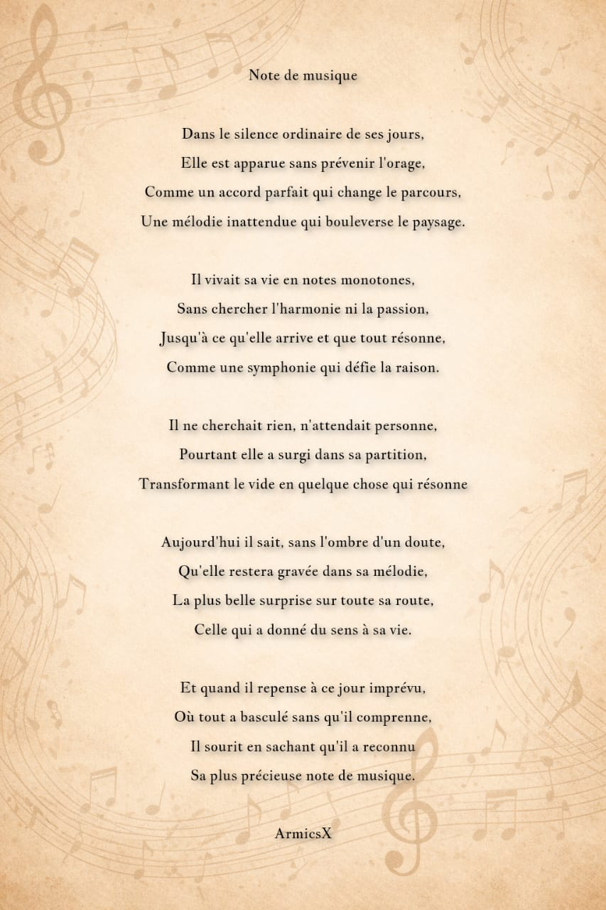

Armicsx Poetry
Où les émotions deviennent mots, et les mots deviennent art
Poète depuis 5 ans, je transforme l'ordinaire en extraordinaire à travers les mots. Chaque poème est un univers où la beauté rencontre l'émotion.
Où les émotions deviennent mots, et les mots deviennent art
Poète depuis 5 ans, je transforme l'ordinaire en extraordinaire à travers les mots. Chaque poème est un univers où la beauté rencontre l'émotion.
Bonjour ! Je suis Armicsx, poète francophone passionné par l'art de transformer les émotions en mots puissants.
J'ai toujours eu une facilité à utiliser les mots pour décrire des choses que beaucoup disent avec simplicité et parfois peu de beauté. Pour moi, écrire c'est être maître de l'univers que je crée à travers mes écrits.
Chaque poème est une invitation à ressentir, à rêver, à vivre pleinement. Je cherche à donner vie à mes écrits en leur conférant de la beauté, qu'il s'agisse d'une déclaration d'amour, d'un texte engagé, ou de paroles de chansons.
Spécialisé en poésie personnalisée, paroles de chansons, et textes créatifs qui touchent l'âme.
J'ai commencé à écrire il y a près de 5 ans, d'abord sur papier. Très vite, j'ai réalisé que j'avais une facilité naturelle à jouer avec les mots pour créer des images et des émotions. Chaque phrase devenait un tableau, chaque vers un univers.
Mes influences sont plus musicales que littéraires :
Après avoir longtemps écrit sur papier, j'ai rejoint Instagram pour partager mes œuvres avec le monde. Cette plateforme m'a permis de toucher des lecteurs qui résonnent avec mon style authentique et émotionnel.
Aujourd'hui, je continue d'explorer les frontières entre poésie, musique et art visuel. Mon objectif : créer des textes qui marquent, qui restent, qui font ressentir quelque chose de vrai.
Les styles et formes que je maîtrise
Portfolio de mes poèmes et textes



Plus de créations sur Instagram
📷 @armicsxJe m'inspire principalement de la nature et parfois d'un mot ou d'une expression qui me vient de manière soudaine. Une phrase entendue, une image vue, une émotion ressentie - tout peut devenir le point de départ d'un poème.
Une fois l'étincelle trouvée, je cherche à donner vie à mes écrits en leur conférant de la beauté. Chaque mot est pesé, chaque vers est ciselé. Je ne me contente pas de dire les choses - je les transforme en art.
Certains poèmes naissent en 15 minutes, dans un flux créatif intense. D'autres prennent plusieurs jours (3 maximum) à mûrir, se transformer, trouver leur forme finale. Je laisse le temps nécessaire à chaque texte pour atteindre sa perfection.
"Écrire, c'est être maître de l'univers que je crée. Chaque poème est un monde où je décide des règles, des émotions, de la beauté."
Pour un mariage, un anniversaire, une déclaration d'amour, des paroles de chanson, ou simplement pour immortaliser une émotion...
Selon la complexité : de 15 minutes à 3 jours maximum. Je prends le temps nécessaire pour que chaque texte atteigne sa perfection.
© 2025 Armicsx Poetry - Tous droits réservés
Fait avec passion et créativité 🖋️✨